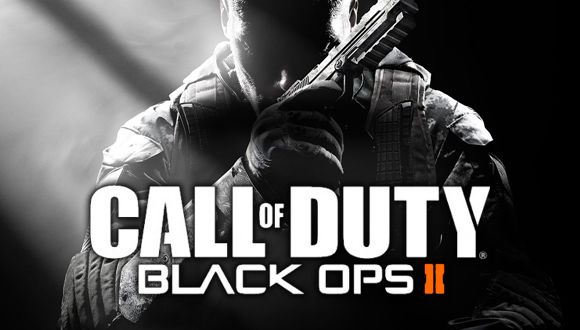
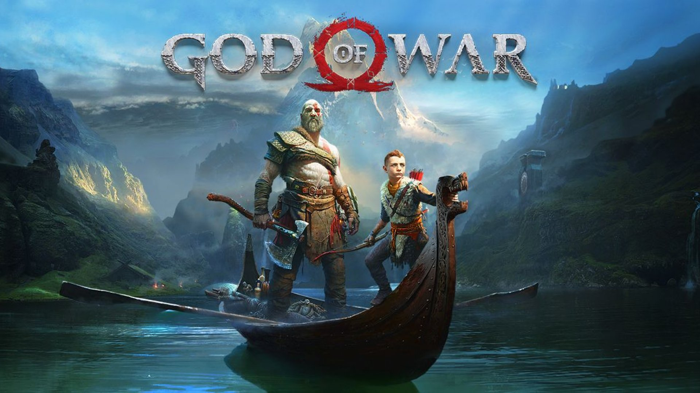
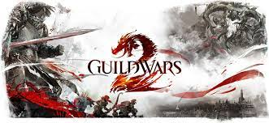
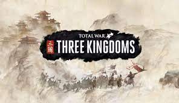

Beispiele
Shooter
Ein Shooter ist der Oberbegriff für ein Computerspielgenre, bei dem die Kernspielmechanik das Schießen ist. Ziel des Spielers ist es, nach bestimmten Vorgaben zum Fortschreiten im Spiel entweder auf Computergegner (Player versus Environment), andere Mitspieler (Player versus Player) oder andere Spielobjekte zu schießen, ohne dass dabei die Spielfigur durch Gegenangriffe oder die Spielphysik stirbt. Shooter-Spiele sind meist auch ein Actionspiel. 3D-Shooter verwenden meist eine Hitbox, um Schusstreffer genau zu bestimmen und auszuwerten. In klassischen Shoot’ em ups wird hingegen der Highscore meist durch die Berechnung der Anzahl und Art der getroffenen Objekte im Abhängigkeit des Schadens der genutzten Waffe berechnet. Aufgrund des in den meisten Shootern geforderten Reaktionsvermögen gehören die meisten Shooter auch zum Geschicklichkeitsspiel, wobei andere Shooter auch mehr Wert auf taktische und strategische Elemente legen.
Action
Actionspiel ist eine Sammelbezeichnung für alle Computerspielgenres, in denen die Spielmechanik überwiegend die Geschicklichkeit und Reaktionsschnelligkeit des Spielers fordert. Dies geht in der Regel mit einer starken Betonung des Echtzeit-Aspekts einher. In den meisten Actionspielen lenkt der Spieler eine einzelne Spielfigur oder ein Fahrzeug. Durch den Einsatz von Trefferpunkten wird die Spielfigur sterblich, bzw. das Fahrzeug zerstörbar, so dass das unversehrte Überstehen des Spielablaufs zu den grundlegenden Anforderungen zählt. In vielen Actionspielen kann der Spieler dabei durch den Einsatz von Schusswaffen (Ego-Shooter, Third-Person-Shooter, Shoot ’em up) oder durch Kampfsportattacken (Beat ’em up) angreifende Gegner besiegen. Andere Actionspiele, wie Jump ’n’ Runs, machen das Überwinden von Hindernissen durch akrobatische Sprünge zum Hauptbestandteil des Spielablaufs.
Adventure
Hauptprinzip des Adventures ist eine zugrundeliegende Geschichte. Im Vergleich zu anderen Genres ist das narrative Element eines Spiels beim Adventure am stärksten betont. Durch Erkundung und das Lösen von Rätseln wird diese Geschichte im Adventure erlebt. Je nach Ausgestaltung der Spielelemente kann der Übergang zum Action-Adventure oder zum Rollenspiel fließend sein. Fast immer sind Adventures Einzelspieler-Spiele.

RPG (Rollenspiele)
Computer-Rollenspiel (engl. role-playing video game, (computer) role-playing game, (C)RPG) bezeichnet ein Genre der Computerspiele, dessen Wurzeln hauptsächlich in den Pen-&-Paper-Rollenspielen liegen, von denen grundlegende Abläufe und Spielmechaniken übernommen werden. Der Hauptunterschied zwischen Pen-&-Paper-Rollenspiel und Computer-Rollenspiel ist, dass die Aufgaben des Spielleiters vom Computer übernommen werden. Dadurch bewegt sich die Handlung von Computer-Rollenspielen in deutlich engeren Bahnen, die durch die Spielentwickler vorgegeben sind.

MMO (Massive Multiplayer Online (Role-Playing) Game)
Ein Massively Multiplayer Online Role-Playing Game (auch „Massive“ statt Massively, abgekürzt MMORPG, übersetzt Massen-Mehrspieler-Online-Rollenspiel) ist eine Sonderform eines Massively Multiplayer Online Game und dabei ein ausschließlich über das Internet spielbares Computer-Rollenspiel, bei dem gleichzeitig mehrere tausend Spieler eine persistente virtuelle Welt bevölkern können. Die eigentliche Spielwelt und die Avatar genannten Spielfiguren der Spieler werden auf Servern verwaltet. Der Spieler verbindet sich typischerweise über ein Clientprogramm mit dem Server. Der Client enthält üblicherweise nur die Daten zur Darstellung der Spielwelt (Grafik, Objekte, Musik, …), während die Spielmechanik auf dem Server verwaltet und verarbeitet wird. Kann der Spieler zwischen mehreren Welten herumreisen, spricht man vom Metaversum.
Simulationsspiele
Ein Simulationsspiel ist ein Computerspielgenre, in dem ein realer Prozess im Rahmen einer Simulation abgebildet wird. Häufig werden hierfür verschiedene Berufe oder Sportarten als Thema gewählt.
Strategiespiele
Ein Computer-Strategiespiel ist ein Computerspiel, dessen Bewältigung vor allem strategisches oder taktisches Geschick erfordert. Dabei übernimmt der Computer entweder die Rolle eines Gegenspielers oder er bietet eine Plattform, auf der mehrere Spieler mit- bzw. gegeneinander spielen können („Multiplayer“). Zu den Computer-Strategiespielen zählen sowohl Adaptionen herkömmlicher Strategiespiele als auch ganz neue Spiele, die nur auf dem Computer existieren. Man unterscheidet nach Ralf Vollbrecht drei Arten von Computer-Strategiespielen: Rundenbasierte Strategiespiele („TBS-Spiele“), Echtzeit-Strategiespiele („RTS-Spiele“) und Aufbau-Strategiespiele.
